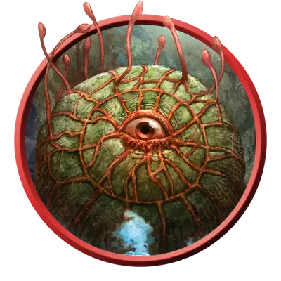

Газовая спора-гриб
Gas Spore Fungus
Большое Растение, без мировоззрения

Класс Защиты 8 Инициатива −5 (5)
Хиты 13 (9к10 - 36)
Скорость 5 футов, Полёта 10 футов (парит)
| мод | спас | ||
|---|---|---|---|
| СИЛ | 5 | −3 | −3 |
| ЛОВ | 1 | −5 | −5 |
| ТЕЛ | 3 | −4 | −4 |
| мод | спас | ||
|---|---|---|---|
| ИНТ | 1 | −5 | −5 |
| МДР | 1 | −5 | −5 |
| ХАР | 1 | −5 | −5 |
Иммунитеты Яд; Испуганный, Оглохший, Опрокинутый, Ослеплённый, Отравленный, Очарованный, Парализованный
Чувства пассивное Восприятие 5, Слепое зрение 30 футов
Языки нет
Опасность 1/2 (100 опыта; БВ +2)
Особенности
Посмертный взрыв. Когда газовая спора умирает, она взрывается Спасбросок Телосложения: Сл 10, каждое существо в 20-футовой Эманации, исходящей от газовой споры. Провал: Цель получает 10 (3к6) урона Ядом и состояние Отравленный на 1к12 часов. Если это состояние Отравленный не было снято, цель умирает по окончании этого времени и распространяет 2к4 Крошечных грибных газовых спор (каждая с 1 Хитом). Через 2к6 дней они становятся Большими и имеют 13 Хитов.
Действия
Усик. Бросок рукопашной атаки: +0, досягаемость 5 фт. Попадание: 3 (1к6) урона Ядом, и цель Отравлена до конца своего следующего хода.
Бонус мастерства +2
Среда обитания Подземье
Сокровища Отсутствуют
Грибы
Смертоносные споры и хищные полипы
Сырое и лишённое солнца Подземье — идеальное место для размножения странных и опасных грибов.
Газовые споры — парящие в воздухе шарообразные грибы с подземными стеблями и наростами, напоминающими стебельки и глаза бехолдеров. После смерти они взрываются и распространяют вокруг себя газовое облако, которое может заразить и убить своих жертв за несколько часов. Из инфицированных тел появляется множество новых спор, которые полностью вырастают за несколько дней.